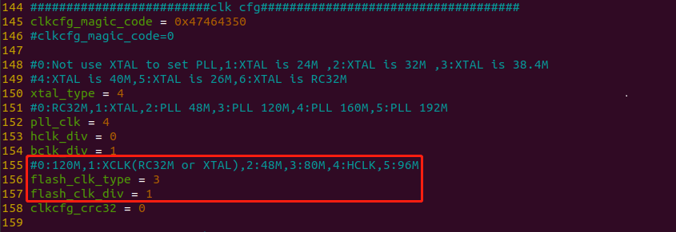
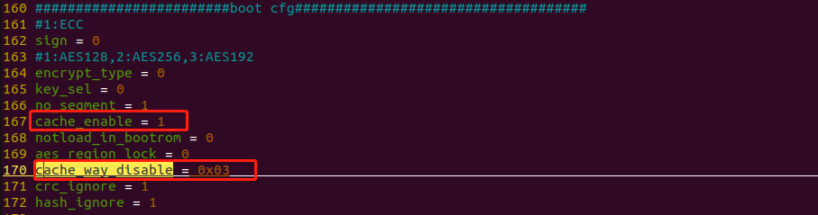

配置Flash频率和cache大小
配置Flash频率
配置文件路径 tools/flash_tool/chips/bl602/img_create_iot/efuse_bootheader_cfg.ini ，配置文件
efuse_bootheader_cfg.ini``(如没有该配置文件，需要先打开烧录工具后该目录中才会存在此配置文件)
，如下图所示，当前Flash时钟源为80M，分频为2分频（1+1），所以当前Flash时钟频率为40MHz，其中\ ``flash_clk_type
表示Flash的时钟源，flash_clk_div 表示分频因子（分频数 =
flash_clk_div + 1）

配置cache size
配置文件路径 tools/flash_tool/chips/bl602/img_create_iot/efuse_bootheader_cfg.ini ，配置文件
efuse_bootheader_cfg.ini``(如没有该配置文件，需要先打开烧录工具后该目录中才会存在此配置文件)
，cache最大为32k，分为4条way，每条way是8k，调整的单位也是1条way，如下图所示，\ ``cache_enable
表示cache是否开启，cache_way_disable
表示关闭way的数目，可以设置为0x01，0x03，0x07，0xFF，分别表示关闭1，2，3，4条way。
